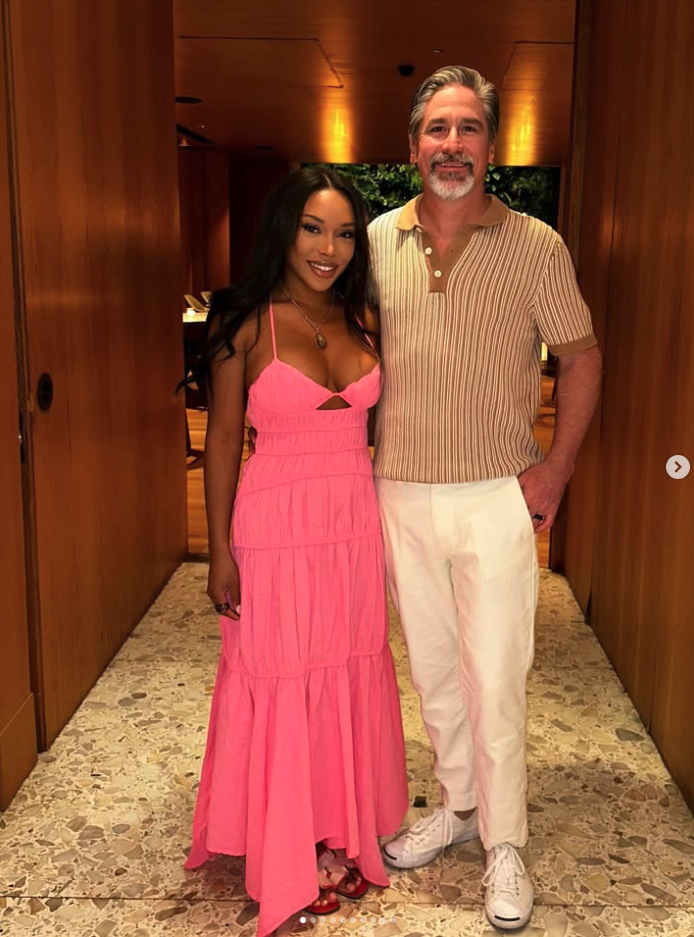
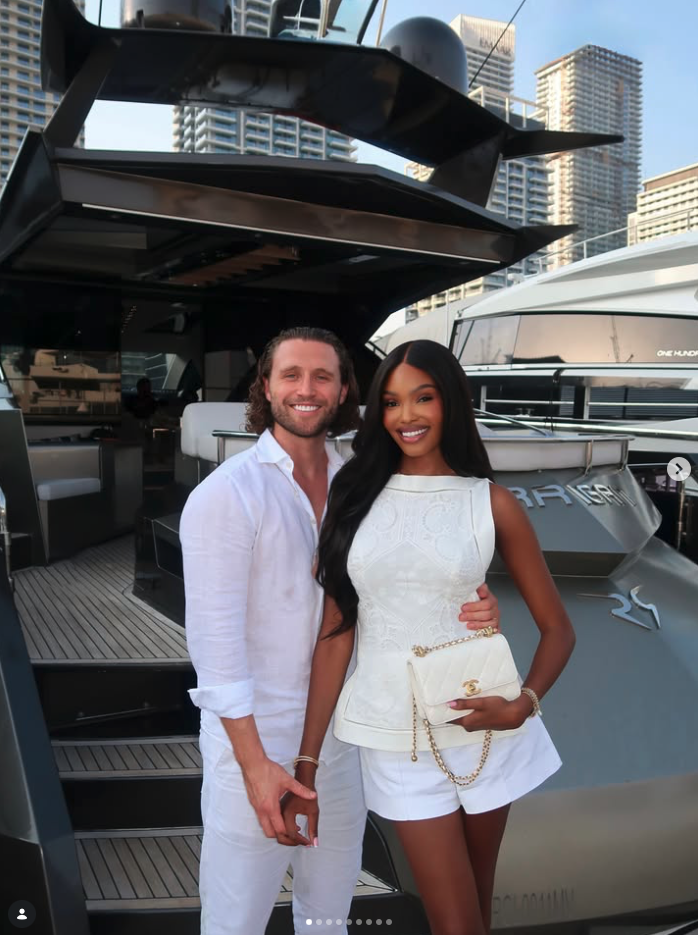
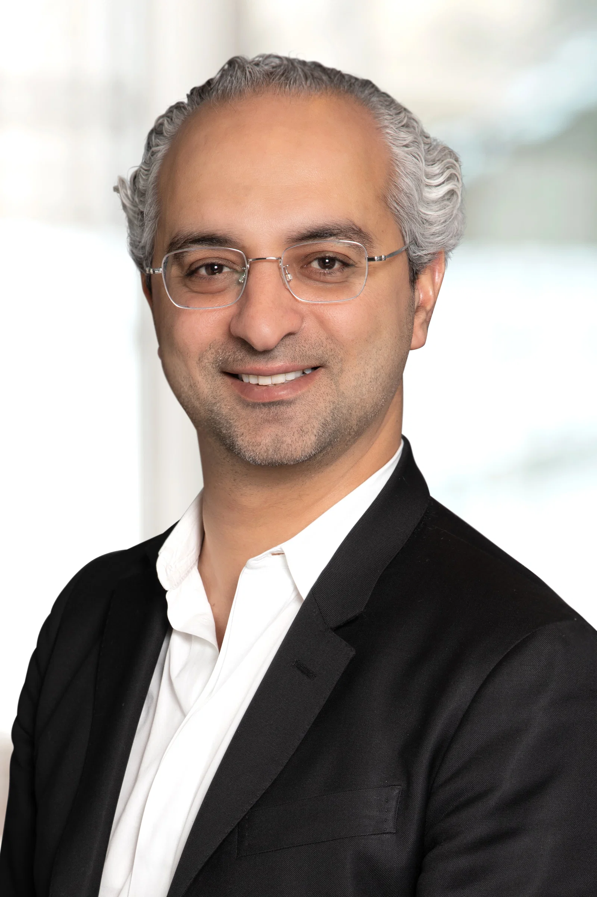

For a one-year anniversary portrait, a sleek black look gives the moment a polished, confident feel. The clean silhouette lets the founder, the celebration, and the keepsake book share the frame without competing.
FOCUS
Anniversary portrait styling
APPROACH
A refined dark look with a simple silhouette that photographs clearly
CLIENT
01 KAVISA KATIKU
CLIENT REVIEW
Fictional sample for layout: “The look felt polished, personal, and completely right for our anniversary shoot.”
02 / CBS NEWS REPORTER
Composed for the camera.
A broadcast portrait calls for a look that reads clearly under studio lights and still feels natural up close. A tailored navy suit, crisp shirt, and considered tie create a confident, camera-ready finish.
FOCUS
On-camera professional styling
APPROACH
Clean tailoring and restrained color with a polished finish
CLIENT
02 ROBERT COSTA
CLIENT REVIEW
Fictional sample for layout: “The outfit looked sharp on camera and still felt comfortable and natural.”

03 / INFLUENCER
A statement look for a night out.
A bright, tiered pink gown makes the outfit the focal point while keeping the overall styling soft and celebratory. The full-length silhouette carries from arrival photos through the evening.
FOCUS
Event and appearance styling
APPROACH
Let a vivid statement dress lead; keep accessories and finishing details complementary
CLIENT
03 TORI MARIE LEWIS
CLIENT REVIEW
Fictional sample for layout: “I felt confident, comfortable, and ready to enjoy the whole evening.”

04 / AI AGENCY FOUNDER
Effortless polish by the water.
For a waterfront setting, a crisp white outfit feels relaxed without losing its polish. Clean lines and a structured handbag bring definition to the look while keeping it easy to wear.
FOCUS
Waterfront event styling
APPROACH
Light, coordinated separates with a structured accessory for contrast
CLIENT
04 JORDAN LEE
CLIENT REVIEW
Fictional sample for layout: “The outfit struck just the right balance between relaxed and put-together.”

05 / BIOMEDICAL RESEARCH ANALYST
Professional, approachable, and in focus.
A strong professional headshot balances warmth with authority. A crisp white shirt and dark tailored jacket keep the portrait timeless, while the open expression makes it feel approachable.
FOCUS
Professional portrait styling
APPROACH
Classic tailoring and a light shirt for clear contrast on camera
CLIENT
05 ISLAM HUSSEIN
CLIENT REVIEW
Fictional sample for layout: “The final look felt like me, only more polished and ready for the camera.”